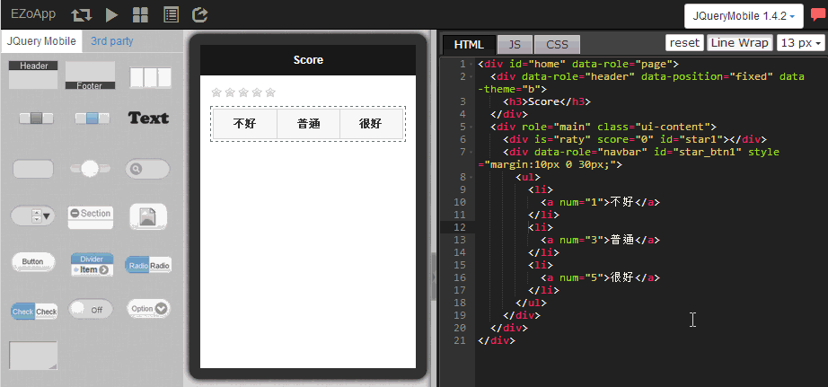

EZoApp 除了拥有 jQuery Mobile 的套件之外，也有 EZo 开发团队自行研发的许多第三方组件 (3rd Party)，除了前几节介绍的地图与滑动页面之外，另外一个相当具有特色的组件就是 raty 这个利用星星给分的评分组件。
就如同现在的许多歌唱或选秀节目，也如同 Google Play 或 App Store 上头的给分机制一般，越来越多的 App 或网站都会提供使用者相关的给分机制，除了可以让用户参与内容质量的把关，也可以立即收到使用者的使用回馈。不过这个道理虽然大家都明了，但俗话说知易行难，背后的技术往往让使用者不知道如何下手进行。
EZoApp 所提供的 raty 组件，可以快速的产生星星给分的机制，只需要撰写相当简单的程序代码，就能够进行给分的动作，非常的实用喔！
范例链接：
结合 JavaScript 应用 - 星号分数评比
与前面章节提过的步骤相同，利用拖曳的方式，将 3rd Party 中的 raty 组件拖曳进入编辑画面。

与 raty 组件同样的做法，在左侧将 navbar 组件拖曳进入编辑区域，然后可以点选 raty 当中的按钮，按下右上角的新增图示，就可以新增按钮。

所有组件都具备之后，接着就要让两个组件之间连动，也就是点选按钮，会出现相对应的星号，而我们的连动机制是使用 EZoApp 独有的 gk 组件，因为 gk 组件将许多程序都已经处理完成，我们几乎只要打几个字，就可以轻松完成连动的作业。
不过在进行连动之前，我们要先把
navbar 内加上一些卷标属性，方便连动的时候有个对照的数值。
HTML 页签程序：
<div id="home" data-role="page">
<div data-role="header" data-position="fixed" data-theme="b">
<h3>Score</h3>
</div>
<div role="main" class="ui-content">
<div is="raty" score="0" id="star1"></div> //设定一开始为零颗星
<div data-role="navbar" id="star_btn1" style="margin:10px 0 30px;">
<ul>
<li>
<a num="1">不好</a> //按下不好显示一颗星
</li>
<li>
<a num="3">普通</a> //按下普通显示三颗星
</li>
<li>
<a num="5">很好</a> //按下很好显示五颗星
</li>
</ul>
</div>
</div>
</div>
JS 页签程序：
$(document).on('pageinit', function () {
$('#star_btn1').on('click', function (e) {
var starnum = $(e.target).attr('num');
$('#star1').gk('score', starnum); //使用 gk 组件
});
});

按下 Preview 之后，我们就可以顺利的看到点选按钮，出现对应的星星数啰！
范例链接：
结合 JavaScript 应用 - 星号分数评比